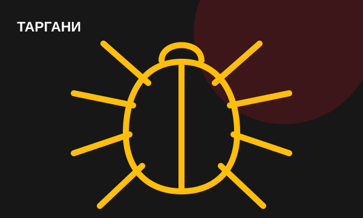
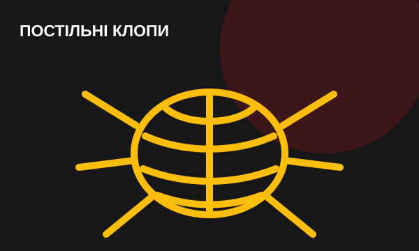
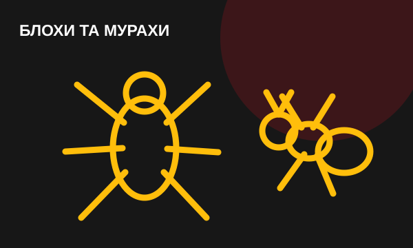
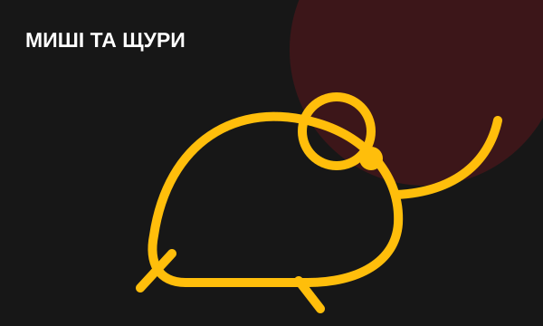
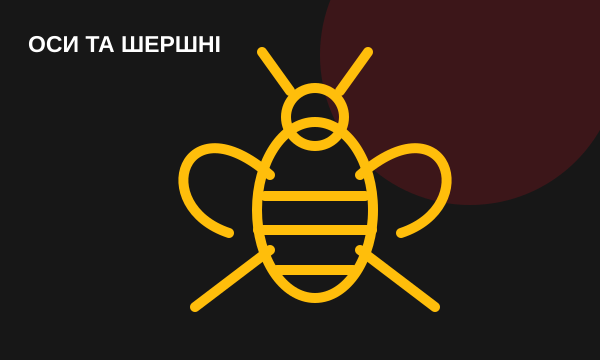
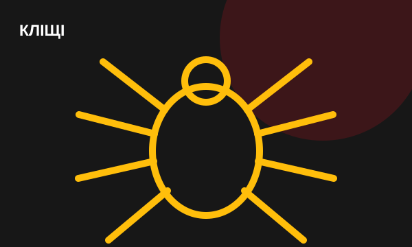
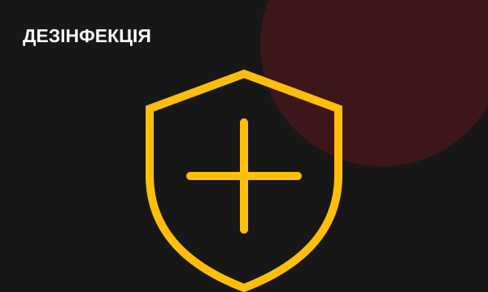
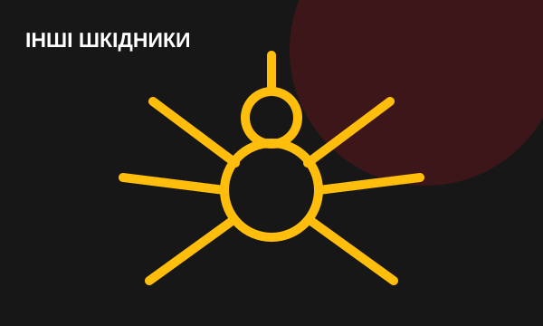

Приватним особам
ШКІДНИКАМ — STOP.
ВАШОМУ ДОМУ — СПОКІЙ.
Професійна обробка квартир, приватних будинків, гаражів, підвалів, господарських приміщень і відкритих територій.
Що знищуємо
Найпоширеніші проблеми
Метод обробки та кількість візитів визначаються після уточнення типу об’єкта, виду шкідника та ступеня зараження.



Миші та щури
Виявлення шляхів проникнення, пастки, приманки та профілактика повторного заселення.
Замовити обробку →

Кліщі
Обробка подвір’їв, дач, газонів, зон відпочинку та інших відкритих територій.
Замовити обробку →

Інші шкідники
Міль, мухи, мошки, павуки та інші комахи — консультація після опису проблеми.
Замовити обробку →Як ми працюємо
4 зрозумілі кроки
1
Консультація
Уточнюємо шкідника, тип об’єкта та масштаби проблеми.
2
Підготовка
Надаємо чіткі рекомендації перед приїздом фахівця.
3
Обробка
Проводимо роботи підібраним методом із дотриманням правил безпеки.
4
Рекомендації
Пояснюємо, що робити після обробки та як знизити ризик повторної появи.
Проблема зі шкідниками вдома?
Телефонуйте — уточнимо ситуацію та зорієнтуємо щодо подальших дій.
099 272 78 29Залишити звернення